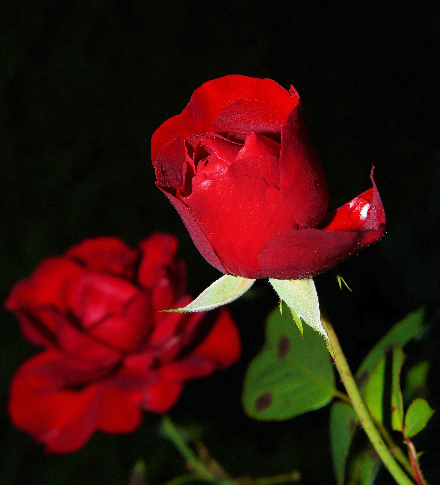

Flowers

A rose is either a woody perennial flowering plant of the genus Rosa in the family Rosaceae or the flower it bears.
The common sunflower (Helianthus annuus) is a species of large annual forb of the genus Helianthus
As tulips are a classic flower that has been loved by many for centuries they have been attached with the meaning of love.
Lily flowers are a popular choice for floral arrangements, thanks to their vibrant and unique colors and shapes